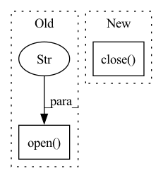

Pattern ID :14103
Before Change
file_names = os.listdir(args.inputs_dir)
for file_name in tqdm(file_names, total=len(file_names)):
// Use PIL to read high-resolution image
image = Image.open(f"{args.inputs_dir}/{file_name}" ) .convert("RGB")
if image.width >= args.image_size and image.height >= args.image_size:
index = 1After Change
workers_pool.apply_async(worker, args=(image_file_name, args), callback=lambda arg: progress_bar.update(1))
workers_pool.close()
workers_pool.join()
progress_bar.close()
def worker(image_file_name, args) -> None:
image = Image.open(f"{args.images_dir}/{image_file_name}").convert("RGB")In pattern: SUPERPATTERN
Frequency: 3
Non-data size: 2
Instances Fragment ID: 47044104
Project Name: lornatang/srgan-pytorch
Commit Name: 1d6be4b16a40a639450395e57e387a892f712cf5
Time: 2022-01-11
Author: liuchangyu1111@gmail.com
File Name: scripts/prepare_dataset.py
M Class Name: AnonimousClass
N Class Name: AnonimousClass
M Method Name: main(1)
N Method Name: main(0)
M Parent Class:
N Parent Class:
M File Name: scripts/prepare_dataset.py
N File Name: scripts/prepare_dataset.py
M Start Line: 23
M End Line: 42
N Start Line: 23
N End Line: 38
Before Change
file_names = os.listdir(args.inputs_dir)
for file_name in tqdm(file_names, total=len(file_names)):
// Use PIL to read high-resolution image
image = Image.open(f"{args.inputs_dir}/{file_name}" ) .convert("RGB")
if image.width >= args.image_size and image.height >= args.image_size:
for i in range(10):After Change
workers_pool.apply_async(worker, args=(image_file_name, args), callback=lambda arg: progress_bar.update(1))
workers_pool.close()
workers_pool.join()
progress_bar.close()
def worker(image_file_name, args) -> None:
image = Image.open(f"{args.images_dir}/{image_file_name}").convert("RGB") Fragment ID: 47044101
Project Name: lornatang/esrgan-pytorch
Commit Name: 904a78487b8c542178fdd96863f47cf20ff63fc8
Time: 2022-02-07
Author: liuchangyu1111@gmail.com
File Name: scripts/prepare_dataset.py
M Class Name: AnonimousClass
N Class Name: AnonimousClass
M Method Name: main(1)
N Method Name: main(0)
M Parent Class:
N Parent Class:
M File Name: scripts/prepare_dataset.py
N File Name: scripts/prepare_dataset.py
M Start Line: 24
M End Line: 39
N Start Line: 23
N End Line: 38
Before Change
def generate_summaries(
examples: list, out_file: str, model_name: str, batch_size: int = 8, device: str = DEFAULT_DEVICE
):
fout = Path(out_file).open("w" )
// b = BartSystem.load_from_checkpoint("./workdir/models/bart-large-mw6/checkpointepoch=1.ckpt")
// b.model.save_pretrained("./workdir/models/bart-large-mw6/")
// b.tokenizer.save_pretrained("./workdir/models/bart-large-mw6/")
model = BartForConditionalGeneration.from_pretrained(model_name).to(device)After Change
for hypothesis in results:
f_out.write(hypothesis + "\n")
f_out.flush()
f_out.close()
def run_generate(args):
Fragment ID: 47044103
Project Name: stanford-oval/genienlp
Commit Name: 6b56b4f2cb4597c95a39218e203ffdc7b96c4408
Time: 2020-04-27
Author: mehrad@stanford.edu
File Name: genienlp/paraphrase/evaluate_bart.py
M Class Name: AnonimousClass
N Class Name: AnonimousClass
M Method Name: generate_summaries(4)
N Method Name: generate_summaries(5)
M Parent Class:
N Parent Class:
M File Name: genienlp/paraphrase/evaluate_bart.py
N File Name: genienlp/paraphrase/evaluate_bart.py
M Start Line: 21
M End Line: 39
N Start Line: 16
N End Line: 42